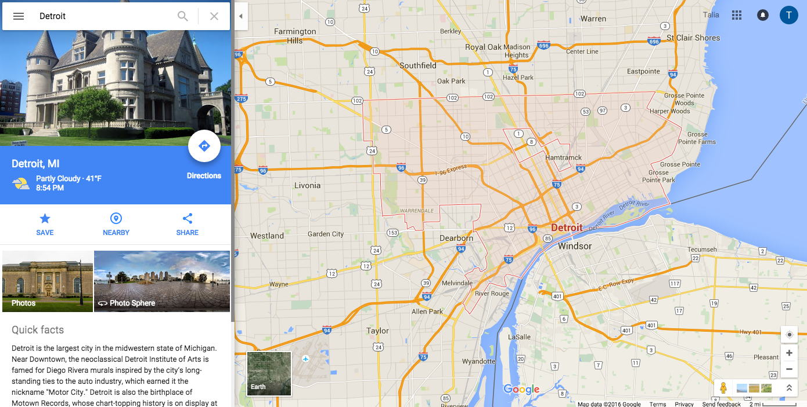
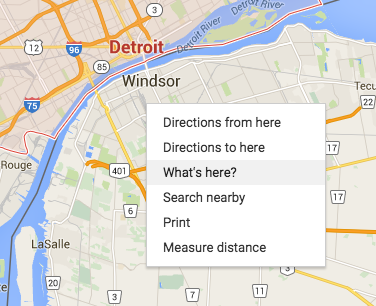
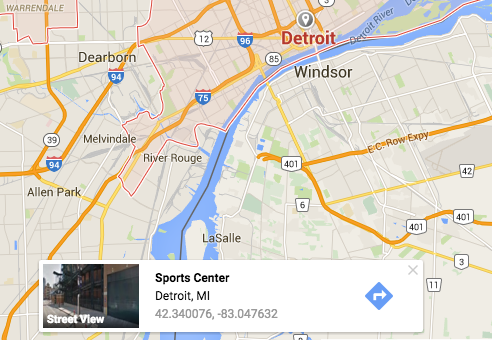

What Is Leaflet.js?
- Leaflet.js is a javascript library for making interactive maps
- It allows the telling of stories through map-making
- It supports mobile and desktop platforms
- It is one of the most important JavaScript mapping libraries
- It is used by major websites such as FourSquare, Pinterest and Flickr
How to find Lat and Long with Google Maps

How to find Lat and Long with Google Maps

How to find Lat and Long with Google Maps

Preparing Your Page
- Include Leaflet CSS file in the head section of your document:
< link rel="stylesheet" href="http://cdn.leafletjs.com/leaflet/v0.7.7/leaflet.css" />
- Include Leaflet JavaScript file:
< script src="http://cdn.leafletjs.com/leaflet/v0.7.7/leaflet.js" > < /script >
Preparing Your Page
- Put a div element with a certain id where you want your map to be:
< div id="map" > </ div >
- Make sure the map container has a defined height, for example by setting it in CSS:
#map { height: 180px; }
Setting up the map
- Let’s create a map of the center of Detroit
- First we’ll initialize the map and set its view to our chosen geographical coordinates and a zoom level:
var map = L.map('map').setView([42.329787, -83.070375], 13);
L.tileLayer('http://{s}.tile.osm.org/{z}/{x}/{y}.png', {
attribution: '© OpenStreetMap contributors'
}).addTo(map);
Using a Map to Tell Stories
- You can add different components to your map to help you tell a story
- These components include shapes, popups, and images
Quick Brainstorming Questions
- What components would you like to use to tell a story?
Adding a Circle to the Map
- Add a circle around your house. Look up area code to get the latitude and longitude
var circle = L.circle([(your lat), (your lng)], 500, {
color: 'red',
fillColor: '#f03',
fillOpacity: 0.5
}).addTo(map);
- Add code snippet
- Change color
- Change transparency
Add a Popup to a Map
- What would you like to change in the City of Detroit? Where would you like to change it?
- Find the address, get the latitude and longitude
- Add a pop up to that location
- Add text to the pop up to describe what kind of change you would like to see
var popup = L.popup()
.setLatLng([51.5, -0.09])
.setContent("What would you like to change?")
.openOn(map);
Add an Image to a Map
- What is an event that you like to do in Detroit?
- Find a picture of that event using google images
- Find the address. Get the latitude and longitude
- Add the image to the map using the retrieved latitude and longitude
var myIcon = L.icon({
iconUrl: 'soccer.jpeg',
iconSize: [30, 30],
iconAnchor: [22, 94],
popupAnchor: [-3, -76],
});
L.marker([(your lat), (your lng)], {icon: myIcon}).addTo(map